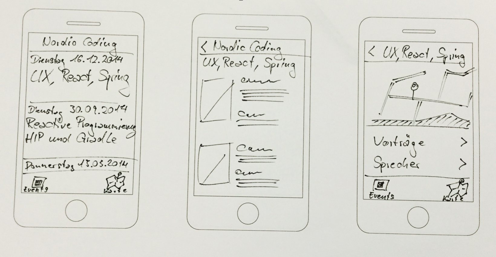
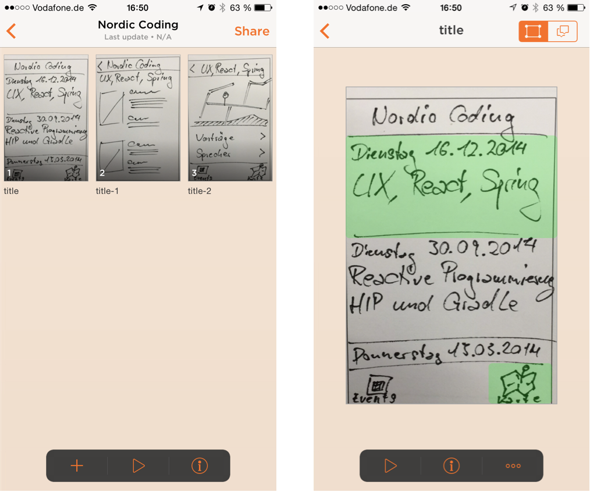
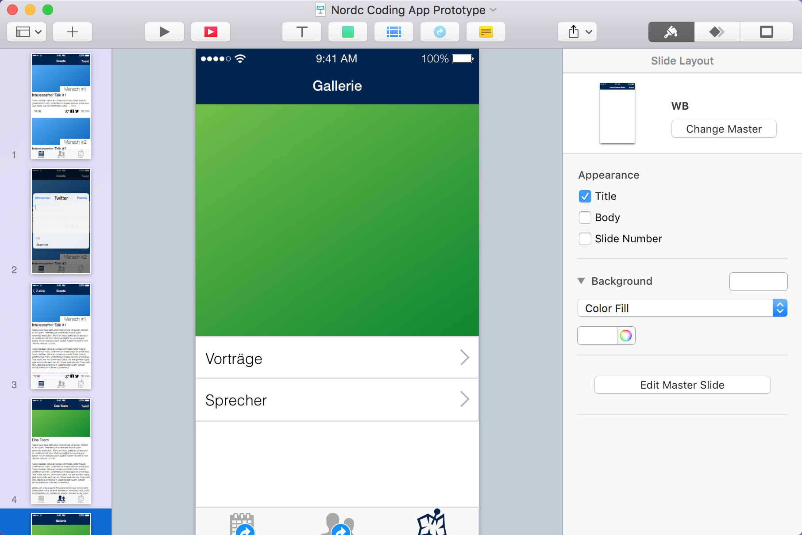
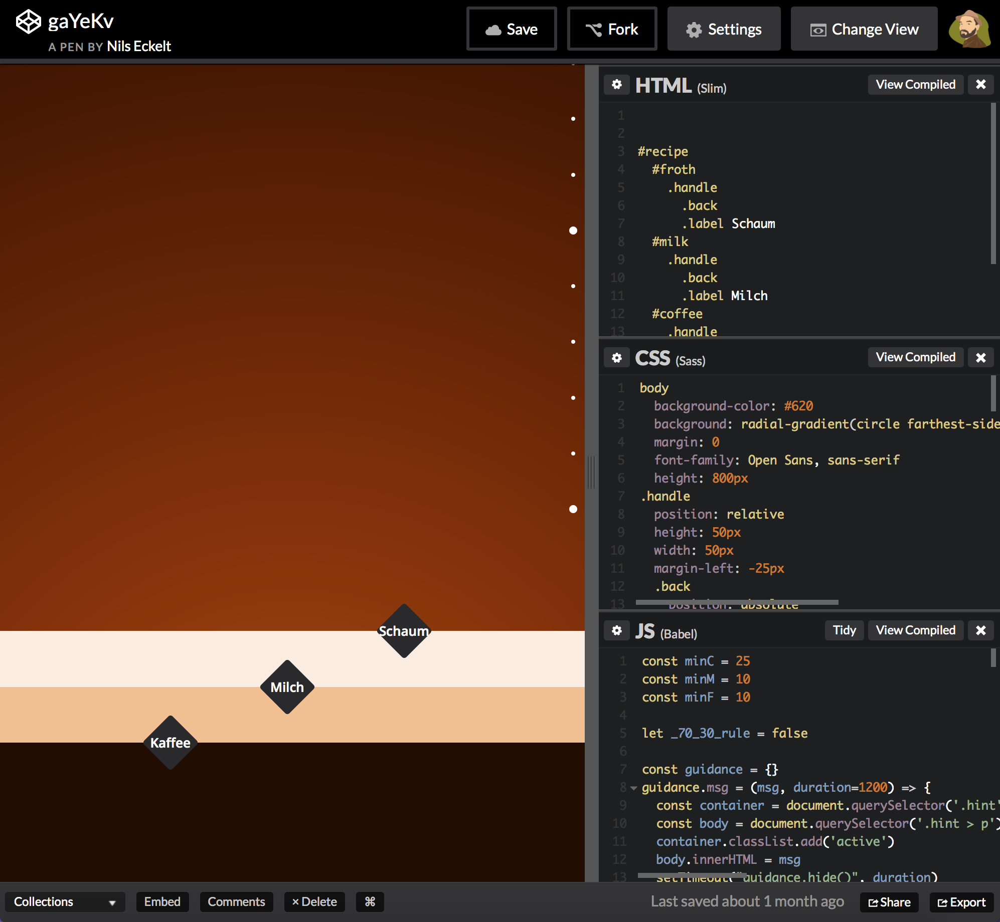

User Experience spielt eine große Rolle bei der Produkt- und Serviceentwicklung. In vielen Bereichen wird Vitruv als erster Architekt und Designer gesehen der mit den Begriffen Firmitas (Festigkeit), Utilitas (Nützlichkeit, Usability) und Venustas (Schönheit) die Kriterien für das Nutzerlebnis definiert hat, wenn es auch damals noch eher auf Gebäude ausgerichtet war.
Wikipedia german
Definition
Wikipedia
User experience includes the practical, experiential, affective, meaningful and valuable aspects of human–computer interaction and product ownership.
Wikipedia english
Definition
User Experience Honeycomb
Semantic Studios
Definition
Five Buckets
ThoughtWorks
Prototypes
Mainly on a mobile app example.
Fake it before you make it.
Tools
Toolbox
Pen and paper
PopApp
Keynote
...and LinkViewer
CodePen (et. al.)
...Frameless
Others:
(Balsamiq)
(Axure)
...
Pen and paper

Pro
No technical equipment
No tool to learn
Created quickly
Con
Test users needs imagination
No real interaction
No transitions
PopApp

Pro
Limited effort to create
Running on real device
Interaction with user
Con
Childish look
Keynote

Pro
Quickly produced
Higher fidelity
You could test on real device
Con
No scrolling or pinching
No transitions or animations
Codepen

Pro
Interactions
Fidelity
Real device
Con
Some dev skills
Reuse(!)
Keynote
Pro
Quickly produced
Higher fidelity
You could test on real device
Con
No scrolling or pinching
No transitions or animations
Life cycle
Life cycle
User tests
Whom to test with?
Target group
Real end-users
Project foreigners
Guerilla testing on the street
What am I going to test?
Information Architecture
Is the information found where it's expected?
User Interactions
Does the user journey feel natural?
Useable
Does the function make sense to the user?
Beauty
Is the user attracted to the design?
How to ask the right questions?
Give a save setting. The user can't be wrong.
Try to be as realistic as it is reasonable.
Ask to speak out thoughts.
Don't use terms that already guide to the solution.
Observe also the "micro-guestures".
Q & A
Thank you.
Questions? Corrections? Suggestions?
Reach out to me:
@NilsEckelt
http://nils.ecke.lt
These slides are available at http://nils.ecke.lt/slides/prototypes